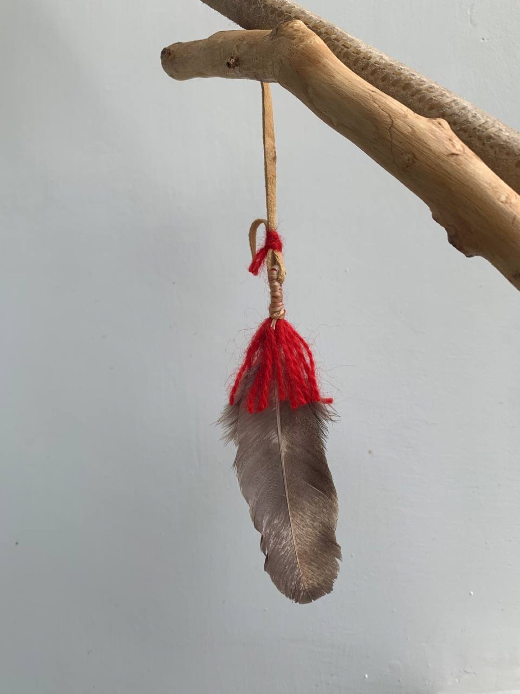
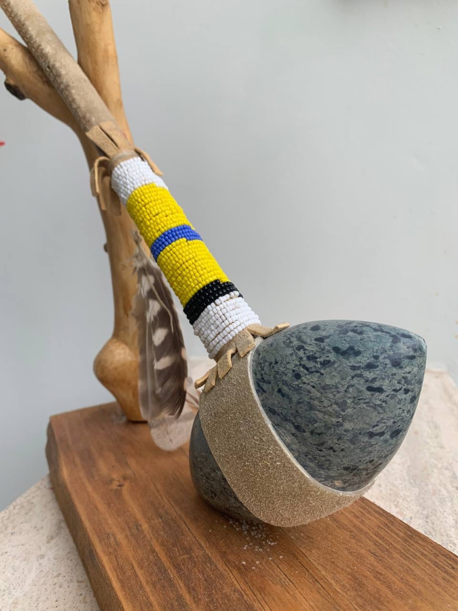
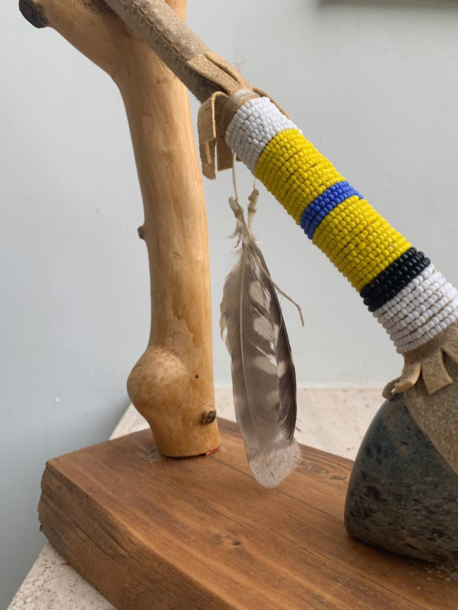
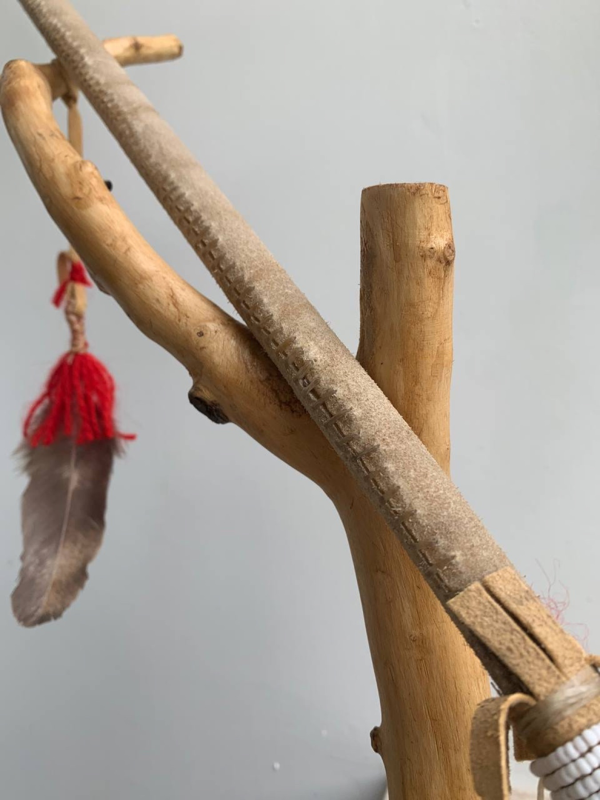
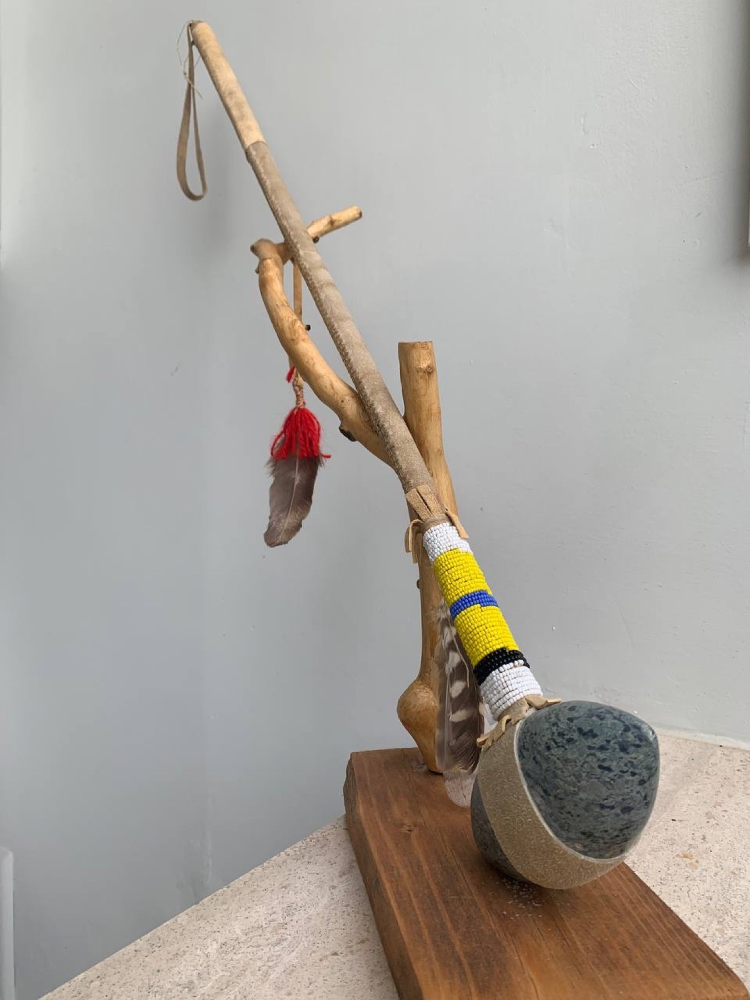
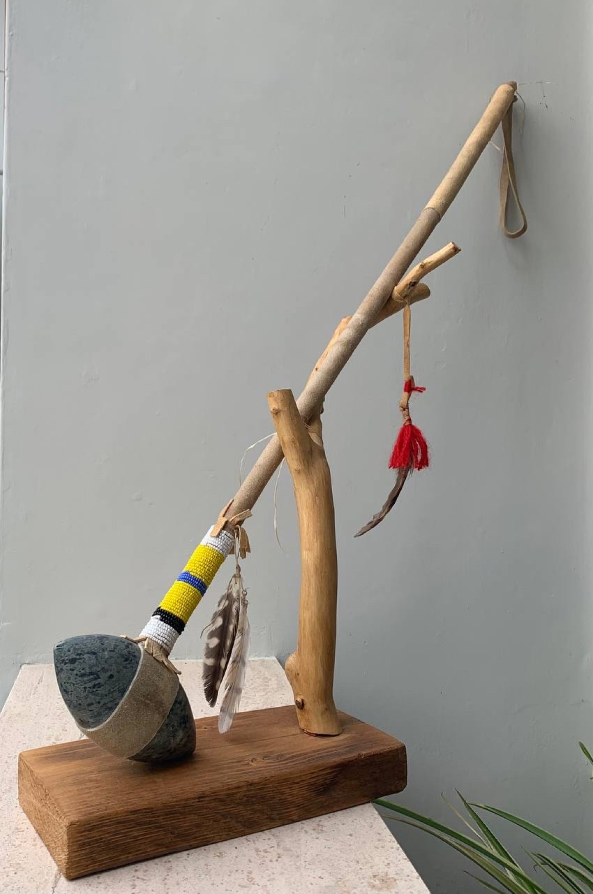

Diario · 6 novembre 2021
Mazza da guerra indiana (stone-headed war club)
Descrizione:
Ciao, amante dell’arte!
Oggi ti parlo di nuova mazza da guerra lunga circa 80 centimetri che presenta una pietra all’estremità. La pietra è una pietra di fiume levigata – praticamente un marmo durissimo – alla cui base ho fatto un buco per inserirci un ramo di legno duro.
Devo confessare che mi piace molto ricreare queste mazze: la procedura di costruzione è tanto complessa quanto affascinante, incredibilmente soddisfacente a risultato finito (almeno per come lo faccio io!). Infatti ti invito a ritagliarti 2 minuti e mezzo del tuo tempo, nel video spiego bene i vari passaggi ed i materiali usati!
I materiali sono veramente importanti per me, ogni mio riproduzione indiana è infatti originale almeno al 95%, questo è il mio stile. L’obiettivo non è copiare, l’obiettivo è riportare in vita antiche gesta, ripercorrendo esperienze passate che man mano vanno dimenticate..
Di seguito ti lascio alcune foto della scultura. Fammi sapere cosa ne pensi con un commento qua sotto! Oppure contattami se sei interessato all’acquisto di questo o di altri pezzi.





